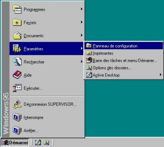
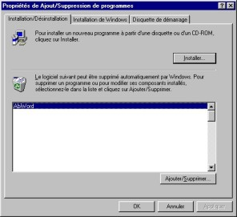
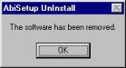

A propos
Commandes
Sommaire
Pourquoi
AbiWord?
Généralités
Environnement
SDI Vs. MDI
Installation
Windows
Linux Intel
Linux PPC
BeOS Intel
BeOS PPC
Solaris
FreeBSD
Les bases #1
Les bases #2
La saisie
Le formatage
Les
paragraphes
Les tabulations
Les colonnes
Les
sections
Les styles
Insertion
d'objet
Imprimer
Rechercher /
Remplacer
Personnalisation
Raccourcis clavier
abisource.com
FAQ
Crédits |
|
Installer AbiWord sous Windows
Bienvenue dans la communauté des utilisateurs d'AbiWord!
La dernière version d'AbiWord doit correctement s'installer et
fonctionner sur les systèmes Windows 95, 98 ou NT4.0+ avec processeur
Intel compatible.
Les processus d'installation sous Windows sont très simples.
- Télécharger
AbiWord et exécuter le fichier d'installation (setup.exe) en
double cliquant sur celui-ci.

- Lorsque vous exécutez ce fichier d'installation, cela
installera AbiWord et ses fichiers systèmes dans le dossier
Program Files de votre disque dur. Vous pouvez changer le dossier
de destination si vous le désirez.
- Un groupe de programmes sera également ajouté dans le menu démarrer
de même qu'un raccourci sur votre bureau.
- L'association avec les fichiers .abw ne sera pas faite tant que
vous n'exécutez pas AbiWord pour la première fois.
- Consultez le fichier README pour de plus amples informations.
Désinstaller AbiWord sous Windows
-
Exécutez la commande Ajouts/Suppressions de
programmes du Panneau de configuration
.
- Sélectionnez le programme AbiWord et cliquez sur le bouton
Ajouter/Supprimer

- Une boite de dialogue vous demande de confirmer. Cliquer alors
sur Oui.
- Un message vous informera qu'AbiWord a bien été désinstallé.
Cliquez alors sur OK.

|